WHITTY MEDIA — LOGO CONCEPTS
The wave ligature (from the freehand sketch — shared-stroke W→M)
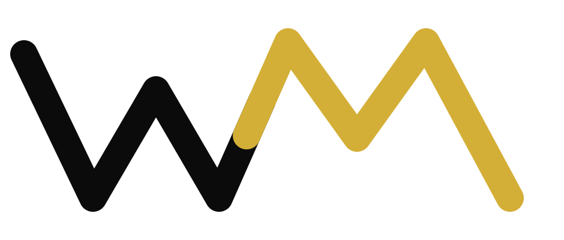
wm-wave-mark.svg (light bg)
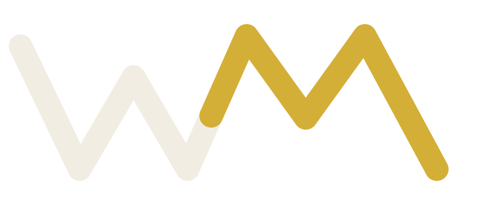
wm-wave-mark-dark.svg
wm-wave-badge.svg (avatar/favicon)
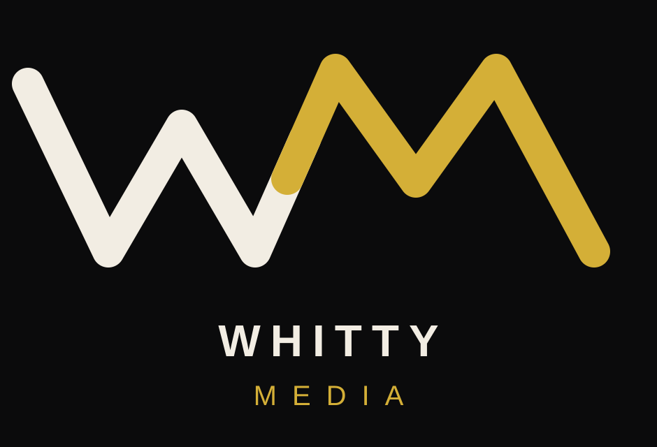
wm-wave-lockup.svg
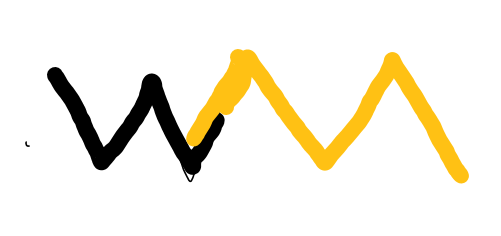
Test.png (the sketch)
Hand-built vector (rotational ambigram — M is the W rotated 180°)
wm-interlock-badge.svg
whitty-media-badge.svg (v1 wave)
whitty-media-lockup.svg (v1)
AI-generated concepts (v2, black on white — recolor gold after picking)
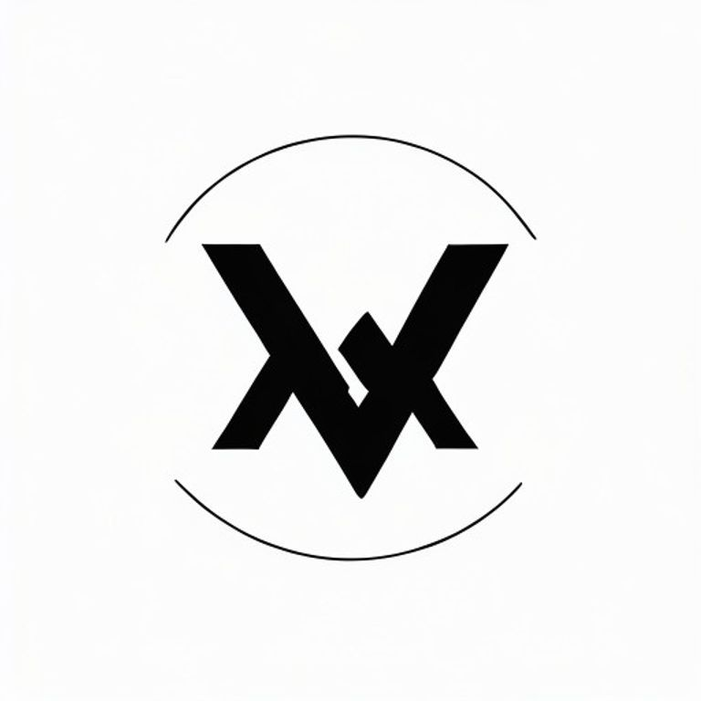
ambigram-v2
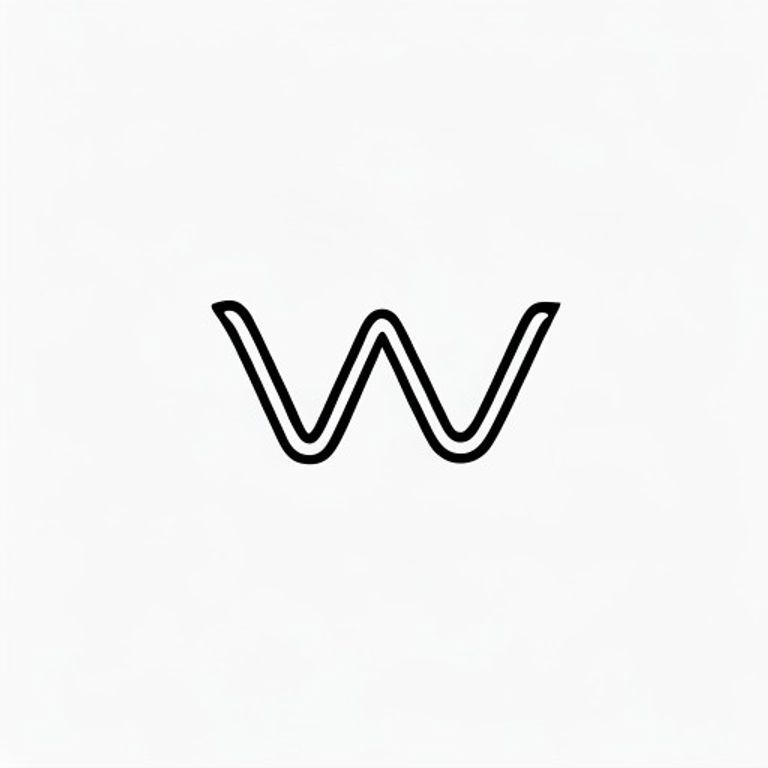
monoline-wave-v2
serif-ligature-v2
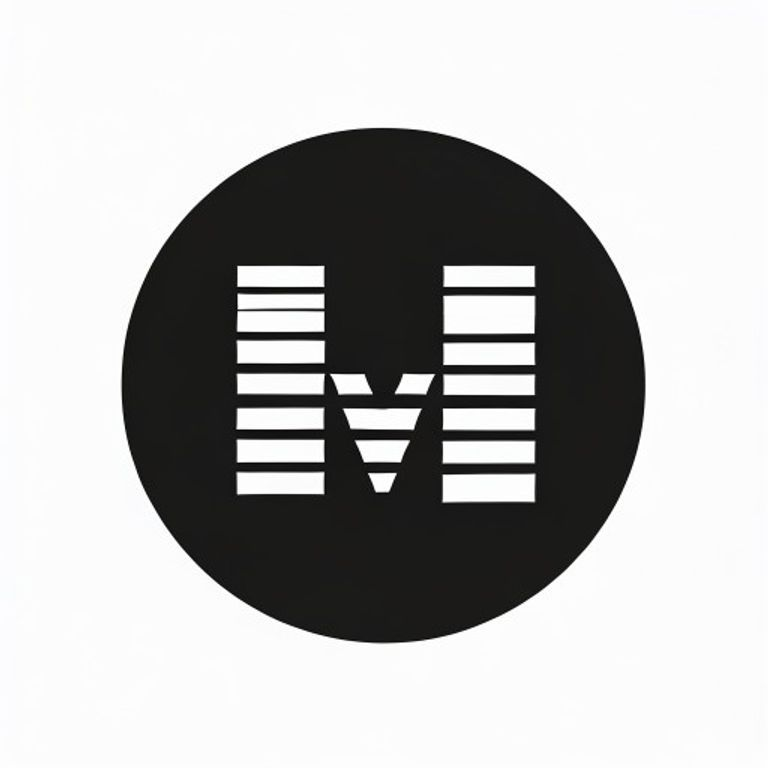
negative-space-v2
AI-generated concepts (v1, gold on dark)
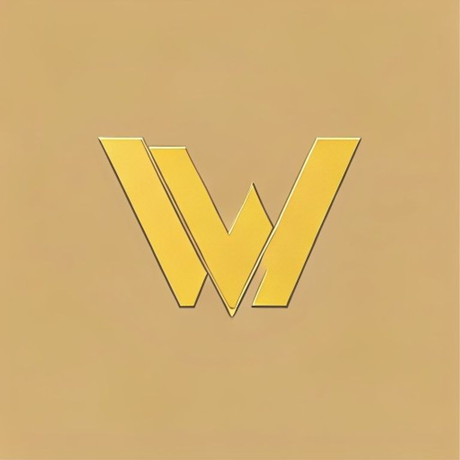
ambigram
negative-space
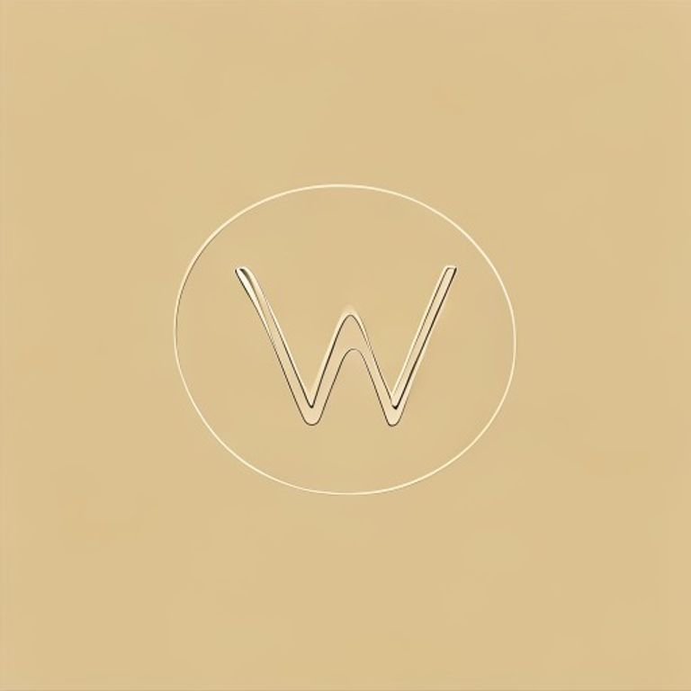
monoline-wave
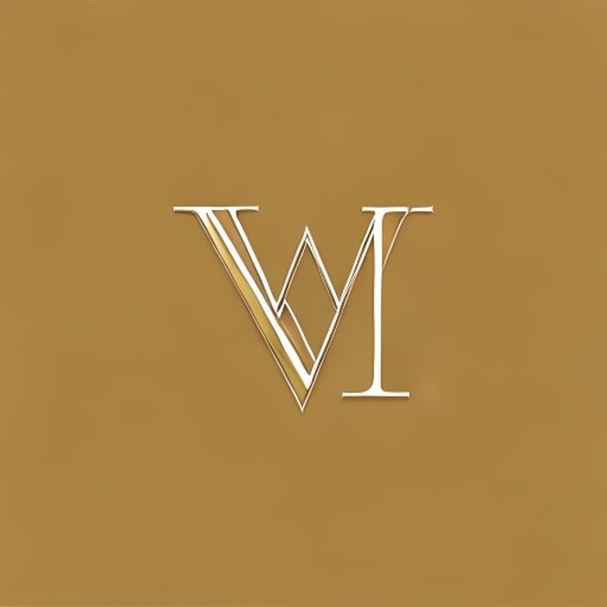
serif-ligature
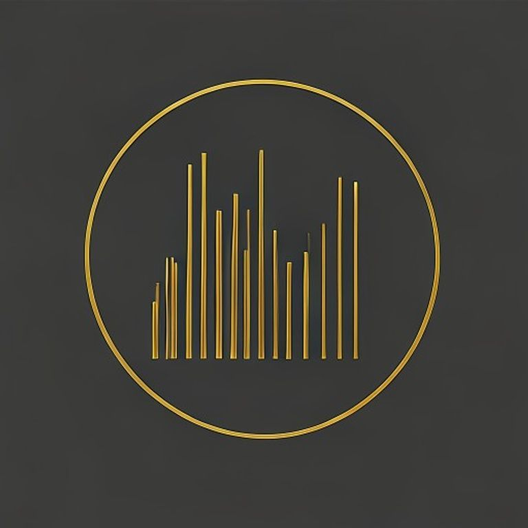
waveform-peaks
watchmaker-crest